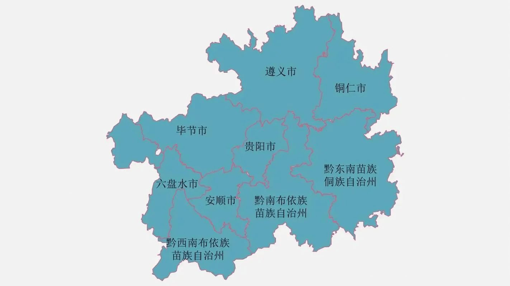
贵州，简称"黔"或"贵"，位于中国西南地区，是一个多民族聚居的省份。这里气候宜人，山川秀丽，被誉为"公园省"。
贵州拥有丰富的自然景观和人文资源，从壮观的瀑布群到古老的苗寨，从喀斯特地貌到丰富的民族文化，每一处都散发着独特的魅力。
自然奇观
多民族文化
特色美食
历史古迹
贵州拥有众多令人惊叹的自然和人文景观，每一处都值得您驻足品味
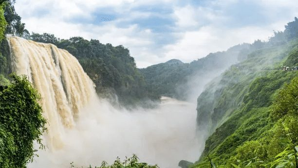
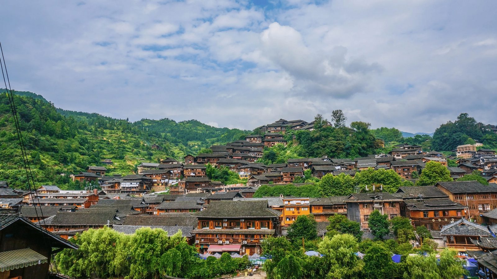
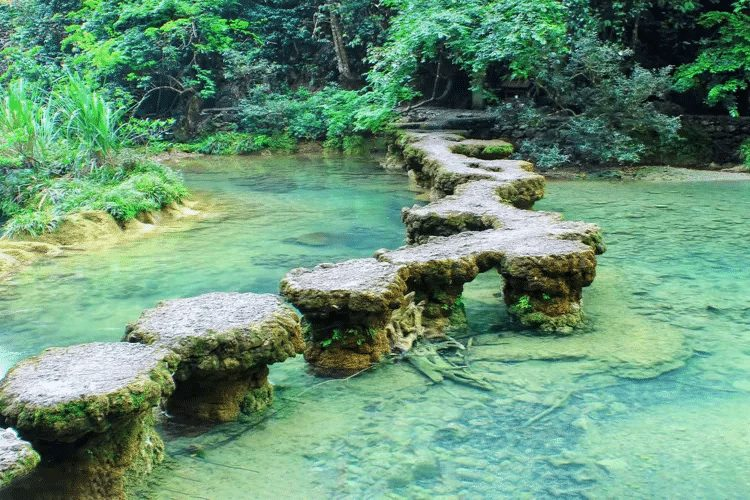
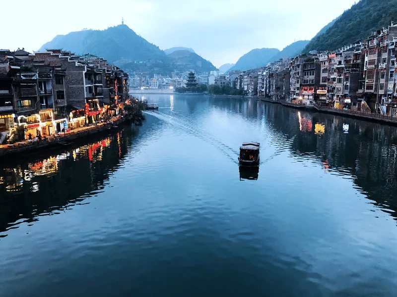
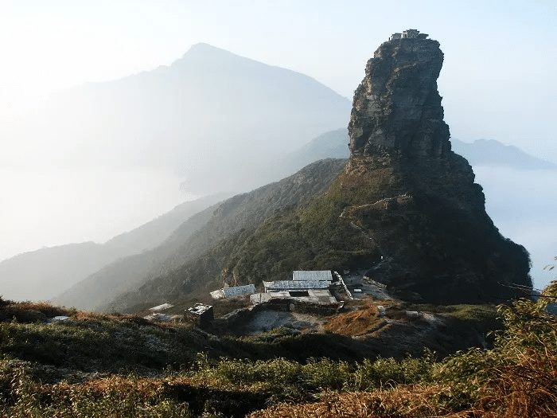
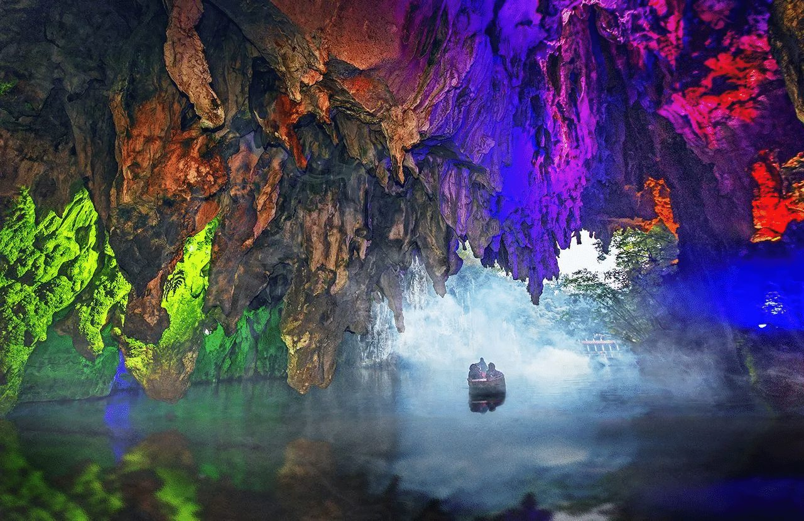
贵州美食以酸辣鲜香为特色，融合了多民族的烹饪智慧，让人回味无穷
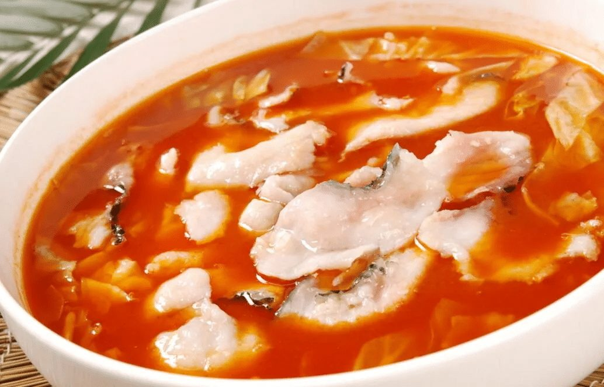
贵州名菜，以新鲜鱼肉和特制酸汤煮制，酸辣开胃，风味独特。
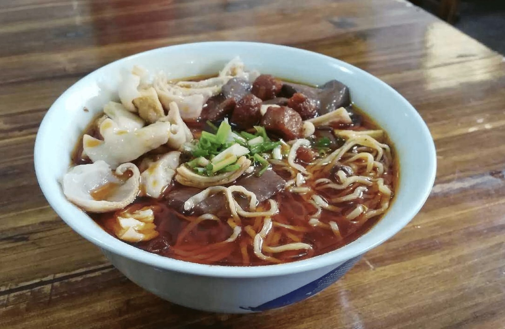
贵阳特色小吃，以猪肠、猪血旺和面条为主，配以特制红油，香辣可口。
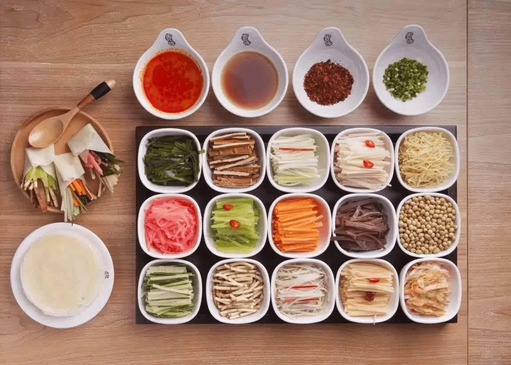
贵阳街头小吃，用薄饼包裹各种蔬菜丝，蘸上特制酱料，清爽可口。
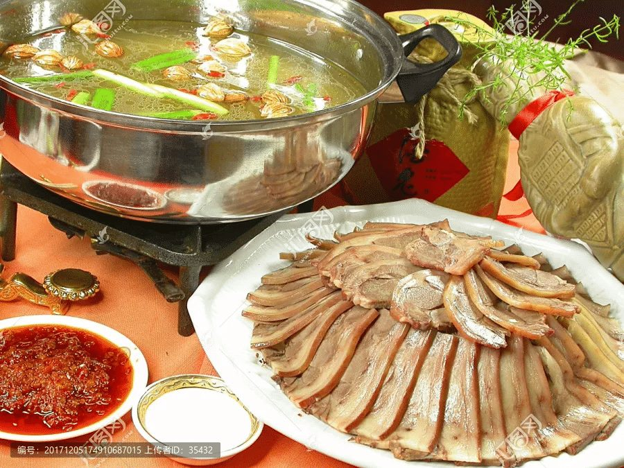
安顺特色美食，以狗肉为主料，配以多种香料炖煮，肉质鲜嫩，香气扑鼻。
精心整理的贵州旅游实用信息，助您轻松规划行程，畅享美好旅程
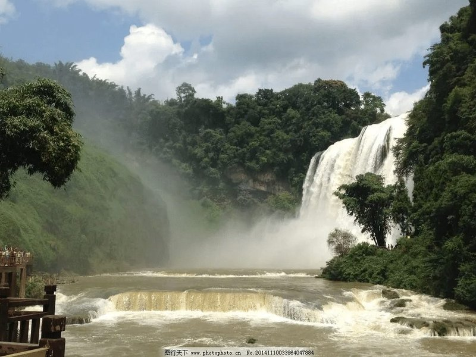
贵州属亚热带湿润季风气候，气候温和，四季分明，年平均气温在15℃左右，是夏季避暑的好去处。
春暖花开，草长莺飞，是游览贵州的好时节。此时黔北的油菜花盛开，景色迷人。
气候凉爽，平均气温23℃左右，是避暑的理想选择。此时也是观赏瀑布的最佳时节，水量充沛，景色壮观。
秋高气爽，天高云淡，是游览贵州的最佳季节。此时梵净山、雷公山等地的红叶漫山遍野，美不胜收。
气候温和，偶有降雪。此时游客较少，可以体验贵州独特的冬季风情，如梵净山的雪景。
听听来过贵州的游客怎么说，他们的真实体验或许能给您的旅程带来灵感
"贵州的自然风光令人惊叹，黄果树瀑布的壮观、荔波小七孔的秀美，都让人流连忘返。最喜欢的是千户苗寨，晚上的万家灯火真的太美了！"
游览了：黄果树瀑布、千户苗寨、荔波小七孔 | 2023年5月
"作为一个美食爱好者，贵州的酸辣口味非常对我的胃口！酸汤鱼、肠旺面、丝娃娃都超级好吃。当地人也很热情，推荐大家一定要去体验一下侗族大歌。"
游览了：贵阳、镇远古镇、肇兴侗寨 | 2023年7月
"十一假期和家人一起去了贵州，虽然人有点多，但景色真的值得！梵净山的云海太壮观了，就是爬山有点累。建议大家提前预订住宿和门票，做好攻略。"
游览了：梵净山、遵义、贵阳 | 2023年10月
如有任何疑问或需要帮助，请随时联系我们，我们将竭诚为您服务
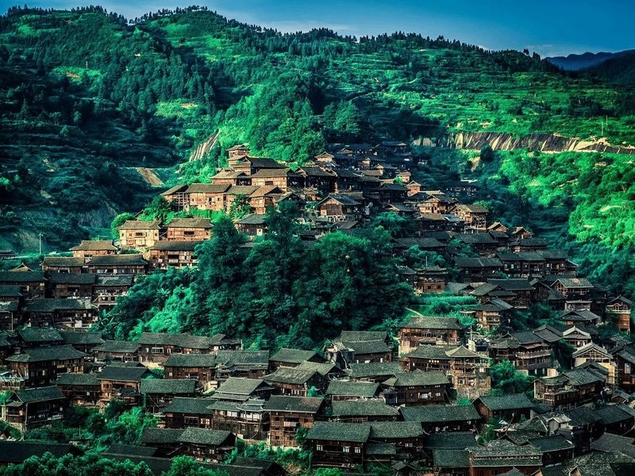
贵州省贵阳市云岩区中华中路1号
0851-12345678
info@guizhoutourism.com
周一至周五: 9:00 - 18:00
订阅我们的电子邮件，获取最新的贵州旅游资讯、优惠活动和旅行灵感
我们尊重您的隐私，不会向第三方分享您的信息